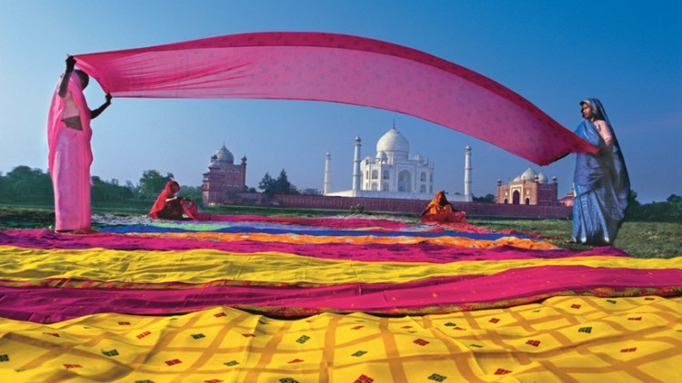

Hindistan ya da resmî adıyla Hindistan Cumhuriyeti , Güney Asya'da bulunan bir ülkedir. Dünyanın en büyük yedinci coğrafi alanı ve en büyük ikinci nüfusuna sahip olan ülkedir. Ulusal marşları "Jana Gana Mana" dır. Hindistan Endonezya’dan sonra sayıca en kalabalık Müslüman nüfusa sahiptir.Hindistan dünyanın en büyük on ikinci ekonomisine ve dünyanın en büyük dördüncü satın alma gücü paritesine sahiptir.
dünyanın en büyük demokrasisidir. Güneyinde Hint Okyanusu, batısında Umman Denizi ve doğusunda Bengal Körfezi'nin bulunmasıyla birlikte Hindistan'ın deniz kıyısı 7.517 kilometre uzunluktadır. Batısında Pakistan, kuzeydoğusunda Çin Halk Cumhuriyeti, Nepal ve Bhutan ve doğusunda Bangladeş ve Myanmar ülkeleri ile sınır paylaşmaktadır. Ayrıca Sri Lanka, Maldivler ve Endonezya'ya çok yakındır.
İndus Vadisi Uygarlığı, tarihi ticaret yolları ve büyük imparatorlukların yer aldığı bölge olan Hint Yarımadası, uzun tarihin çoğu boyunca ticari ve kültürel zenginliği için biliniyordu. Hindistan, dünyanın en önemli dört dininden olan Hinduizm, Budizm, Jainizm ve Sihizmin doğum yeridir. Ayrıca, Zerdüştçülük, Yahudilik, Hristiyanlık ve İslam dinleri M.S. birinci yüzyıldan itibaren ülkeye gelerek bölgenin çeşitli kültürünü şekillendirdi.
Hindistan, 28 tane eyalet ve birlik bölgesinden oluşan ve parlamenter demokrasi olan bir cumhuriyettir. Borsa sayılarına göre dünyanın en büyük on ikinci ekonomisine ve dünyanın en büyük dördüncü satın alma paritesine sahiptir. 1991'den beri uygulanan ekonomik inkılapları nedeniyle dünyanın en hızlı büyüyen ekonomilerinden birisidir. Buna rağmen yoksulluk ve kötü beslenme oranları hâlâ çok yüksek, okuryazarlık ise çok düşüktür. Çin ile birlikte dünya gezegeninde nüfusu 1 milyar sınırının üstündeki iki ülkeden birisi olarak önemli bir yere sahip olan Hindistan, daha yüksek olan nüfus artış hızı sebebiyle yakın bir gelecekte dünyanın en kalabalık ülkesi olacaktır.
